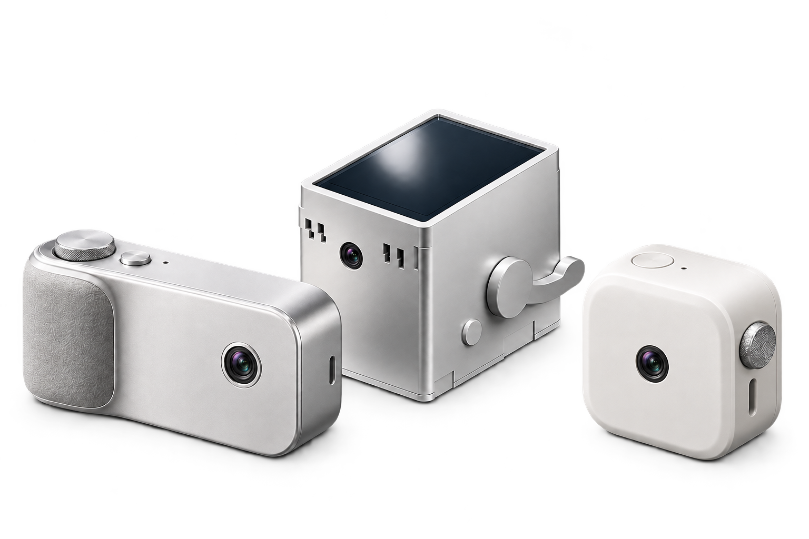
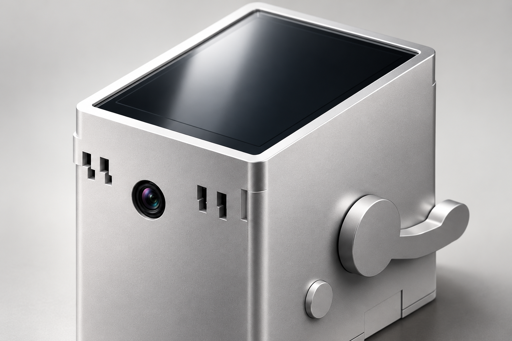

一台正在制作的相机 · 两种外形想象
做一台，
像你的相机。
从认识零件到第一次拍摄，
一步步看懂、动手、验证。

中文制作教程 · 第 1 版概念外观尚未做结构验证，也没有可打印模型向下了解 ↓
外形灵感 / 同一个起点，更多可能
先做出来，
再做成你的样子。
画面里有一款来自Junshu现有项目的高方盒相机：顶置屏幕、小镜头孔与侧面拨杆都沿用当前设计方向。旁边两款只是外形概念，帮助比较握持、观察和操作的不同感觉。
概念外观尚未验证结构或硬件适配；它们暂无可下载的打印模型。

现有外形 · 材质与灯光演绎阅读路径 / 四段走完一台相机
一段一段地做，
每一步都讲清楚。
完整路线共有 16 章。这里先看四个阶段；详细内容按顺序展开，每章都有准备、步骤、完成检查与排错。
开始制作前 / 先让 AI 帮你准备
两次复制，
让 AI 帮你开始。
把项目链接和下面这段话发给 AI。
接下来，让它一步一步带你准备电脑环境。
01
把 GitHub 链接发给 AI。
复制链接 → 粘贴到 AI 对话框 → 发送。
GitHub 项目链接https://github.com/Junshu111/junshu-camera
02
再把这段话发给 AI。
复制完整提示词 → 发到同一个对话框。
发给同一个 AI 对话框
我是新手，请根据上面的 GitHub 仓库，带我搭建 Junshu 自制相机项目的电脑端环境。
先获取并阅读 README、AGENTS.md（如有）和 GETTING-STARTED.md，确认我的电脑系统与项目依赖，再在独立项目文件夹中按文档安装和自检。
需要我操作时，一次只讲一步，用简单中文说明在哪里点、怎么做。如果无法读取仓库或操作我的电脑，请先告诉我需要怎样配合。
本次只准备电脑端，不连接或写入树莓派。完成后告诉我：项目位置、自检结果和下一步。
↳然后，跟着 AI 的说明继续。先准备电脑环境，之后再动手制作相机。